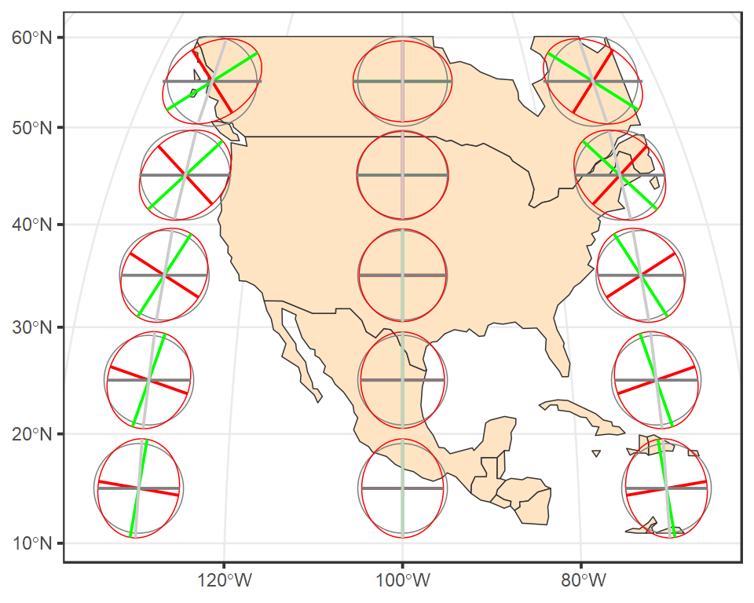
Tissot’s Indicatrix
Introduction
When converting spatial features from a geographic coordinate system (GSC) to a projected coordinate system (PCS) one or more spatial properties may be distorted in the transformation. These properties include area, shape, distance and direction .
Nicolas Tissot’s indicatrix is designed to quantify the level of distortion in a map projection. The idea is to project a small circle (i.e. small enough so that the distortion remains relatively uniform across the circle’s extent) and to measure its distorted shape on the projected map.
For example, the following figure shows the distorted circles at different locations in North America when presented in a Mollweide projection whose central meridian is centered in the middle on the 48 states at 100°W.
Let’s explore a Tissot indicatrix (TI) in more detail at 125°W and 60°N in the Mollweide projection.
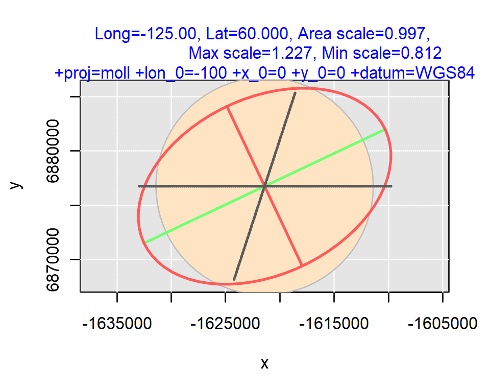
The red distorted ellipse (the indicatrix) is the transformed circle in this particular projection (+proj=moll +lon_0=-100 +x_0=0 +y_0=0 +datum=WGS84). The green and red lines show the magnitude and direction of the ellipse’s major and minor axes respectively. If these axes are not equal (i.e. if the ellipse has a non-zero eccentricity), the projection is said not to be conformal at this location. These lines can also be used to assess scale distortion which can vary as a function of bearing as seen in this example. The green line shows maximum scale distortion and the red line shows minimum scale distortion–these are sometimes referred to as the principal directions. In this working example, the principal directions are 1.227 and 0.812 respectively. A scale value of 1 indicates no distortion. A value less than 1 indicates a smaller-than-true scale and a value greater than 1 indicates a greater-than-true scale.
Not only can shape be distorted, but its area can be as well. The bisque colored circle at the center of the ellipse represents a base circle as represented by this Mollweide projection. It’s smaller than the indicatrix. The indicatrix is about 0.997 times smaller than the base circle. In other words, an area will be exaggerated 0.997 times at this location given this projection.
Other features of this indicatrix include The north-south grey line which is aligned with the meridian and the east-west grey line which is aligned with the parallel. These lines are used to assess if meridians and parallels intersect at right angles.
Generating Tissot circles
Loading a few functions and base layers
A group of functions are available on the github website and can be sourced via:
library(sf)
library(ggplot2)
# Load functions used in this tutorial
source("https://raw.githubusercontent.com/mgimond/tissot/master/Tissot_functions.R")This tutorial will also make use of a few base layers that will be used as a reference.
world <- readRDS(gzcon(url("https://github.com/mgimond/tissot/raw/master/smpl_world.rds")))
us <- readRDS(gzcon(url("https://github.com/mgimond/tissot/raw/master/smpl_US.rds")))
# Change US lon values from 0:360 to -180:180
us.crs <- st_crs(us)
st_geometry(us) <- st_geometry(us) + c(-360, 0)
st_crs(us) <- us.crsDefining a few projections
In this next code chunk, we’ll create a few projection objects for use later in this tutorial.
Note 1: PROJ string syntax is used to define projections in this tutorial. This may generate warnings when running some R scripts given that WKT format is now becoming a preferred projection format.
Note 2: Modifying a projection’s tangent or secant coordinate values may result in distorted base maps and/or errors in the underlying modified geometry if the new projection forces a merging of vector layers across the date line.
proj.rob <- "+proj=robin +lon_0=0 +x_0=0 +y_0=0 +ellps=WGS84" # Robinson
proj.aea <- "+proj=aea +lat_1=30 +lat_2=45 +lat_0=37.5 +lon_0=-96 +x_0=0 +y_0=0 +ellps=GRS80 +datum=NAD83 +units=m +no_defs" # Equal area conic
proj.eqdc <- "+proj=eqdc +lat_0=37.5 +lon_0=-96 +lat_1=30 +lat_2=45" # Equidistant conic
proj.merc <- "+proj=merc +ellps=WGS84" # Mercator
proj.ortho1 <- "+proj=ortho +lon_0=-69 +lat_0=45 +ellps=WGS84" # Planar projection
proj.utm19N <- "+proj=utm +zone=19 +ellps=GRS80 +datum=NAD83 +units=m +no_defs" # UTM NAD83
proj.cea <- "+proj=cea +lon_0=0 +lat_ts=0" # Equal Area Cylindrical projection.
proj.carree <- "+proj=eqc +lat_ts=0 +lat_0=0 +lon_0=0 +x_0=0 +y_0=0 +ellps=WGS84
+datum=WGS84 +units=m +no_defs" # Plate Carree
proj.aeqd <- "+proj=aeqd +lat_0=45 +lon_0=-69 +x_0=0 +y_0=0 +ellps=WGS84
+datum=WGS84 +units=m +no_defs" # Azimuthal Equidistant
proj.gnom <- "+proj=gnom +lon_0=-100 +lat_0=30" # Gnomonic
proj.lcc <- "+proj=lcc +lat_1=33 +lat_2=45 +lat_0=39 +lon_0=-96 +datum=NAD83" # USA Lambert ConformalWe’ll also define the input coordinate system used throughout this exercise (WGS 1984 GCS). This CS will be used to define the lat/long values of the TI centers.
proj.in <- 4326 # EPSG code for WGS 1984 GCSMercator projection indicatrix
We’ll start off by exploring a Mercator projection (a popular projection found on many mapping websites).
First, we’ll define point locations where we will want to evaluate projection distortions. We’ll automate the point creation process by gridding the point distribution.
lat <- seq(-80,80, by=20L)
lon <- seq(-170,170, by=34L)
coord <- as.matrix(expand.grid(lon,lat))Next, we’ll run the coord_check() function (one of the functions sourced earlier in this tutorial) to remove any points that may fall outside of the Mercator’s practical extent.
coord2 <- coord_check(coord, proj.out = proj.merc)Next, we’ll generate the indicatrix parameters for these points using the custom ti() function.
i.lst <- apply(coord2,1, function(x) ti(coord = x, proj.out = proj.merc))Next, we’ll create sf objects from these indicatrix parameters.
tsf <- tissot_sf(i.lst, proj.out = proj.merc)The output object tsf is a list consisting of the different indicatrix sf features. Each feature can be extracted from the list via its component name:
tsf$baseThe base circle as represented by the projected CS (polygon)tsf$indThe indicatrix (polygon)tsf$majaThe semi-major axis (polyline)tsf$minaThe semi-minor axis (polyline)tsf$lamThe parallel (polyline)tsf$phiThe meridian (polyline)
Finally, we’ll plot the ellipses using the ggplot2 package.
world.merc <- st_transform(world, proj.merc) # Project world map
ggplot() +
geom_sf(data = world.merc, fill = "grey90", col = "white") +
geom_sf(data = tsf$base, fill = "bisque", col = "grey50") +
geom_sf(data = tsf$ind, col="red", fill = NA) +
geom_sf(data = tsf$mina, col="red", fill = NA) +
geom_sf(data = tsf$maja, col="green", fill = NA) +
geom_sf(data = tsf$lam, col="grey50", fill = NA) +
geom_sf(data = tsf$phi, col="grey80", fill = NA) +
coord_sf(ylim=c(-18800000,18800000), crs = proj.merc) +
theme_bw()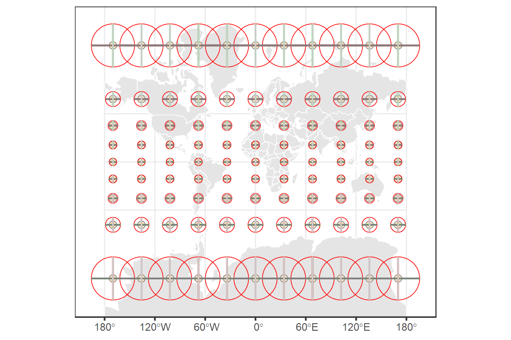
The Mercator projection is conformal in that the shape of the circle remains a circle. Also, its lines of longitude and latitude remain at right angles across the entire map extent. Its area, however, is heavily distorted as one approaches the poles (recall that the red circles represent the true circle and the bisque colored circles are the projection’s rendering of the circle in its own coordinate system).
A separate function, TI_local() is available that allows you to explore the indicatrix in more detail at a single point location. For example, to explore the Mercator distortion at a location in central Maine (USA), type:
ti.maine <- local_TI(long = -69.5, lat = 44.5, proj.out = proj.merc)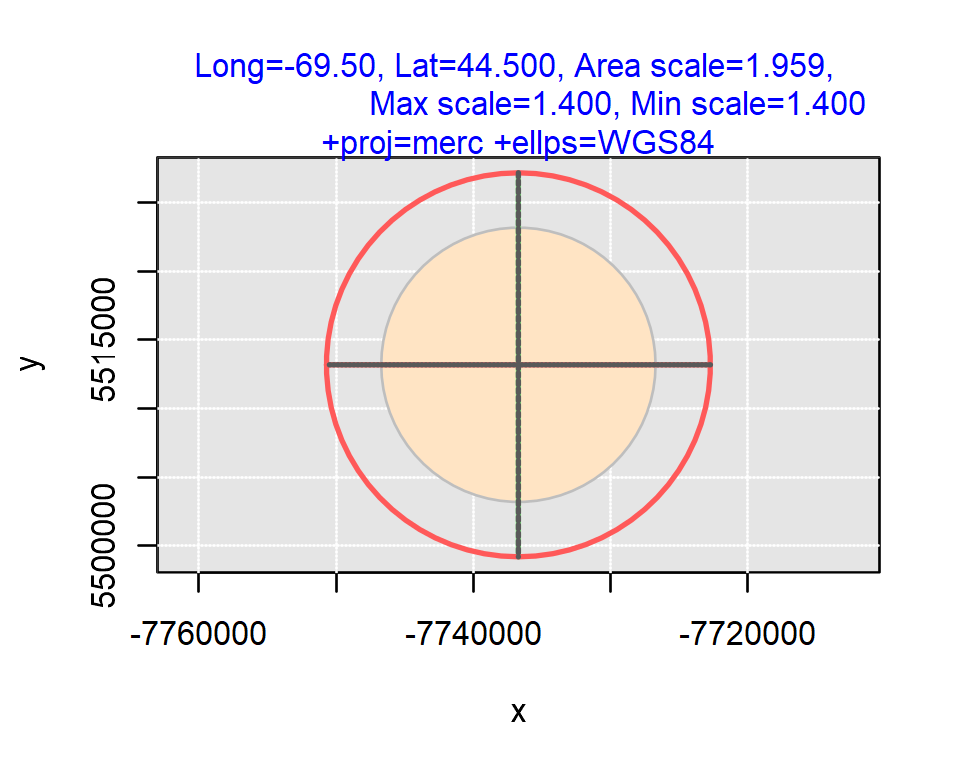
You can extract indicatrix parameters from the ti.maine object generated from this function. For example, to extract the area scale, type:
ti.maine$scale.area[1] 1.959244Likewise, to extract the principal direction (length) scales, type:
ti.maine$max.scale[1] 1.399736ti.maine$min.scale[1] 1.399725Creating a custom function
Going forward, we will rerun many of the code chunks executed earlier in this exercise. To reduce code clutter, we will create a custom function that will take as input projection type (proj.out) and tissot center locations.
sf_use_s2(FALSE)
ti.out <- function(proj.in = proj.in, proj.out, lat, lon, bmap = world,
plot = TRUE){
coord1 <- as.matrix(expand.grid(lon,lat))
coord2 <- coord_check(lonlat =coord1, proj.out = proj.out)
i.lst <- apply(coord2,1, function(x) ti(coord = x, proj.out = proj.out))
tsf <- tissot_sf(i.lst, proj.out = proj.out)
if(plot == TRUE){
# Re-project the world
bmap.prj <- st_transform(bmap, crs = proj.out, check = TRUE)
ggplot() +
geom_sf(data = bmap.prj, fill = "grey90", col = "white") +
geom_sf(data = tsf$base, fill = "bisque", col = "grey50") +
geom_sf(data = tsf$ind, col="red", fill = NA) +
geom_sf(data = tsf$mina, col="red", fill = NA) +
geom_sf(data = tsf$maja, col="green", fill = NA) +
geom_sf(data = tsf$lam, col="grey50", fill = NA) +
geom_sf(data = tsf$phi, col="grey80", fill = NA) +
theme_bw()
} else{
return(tsf)
}
}Equal area cylindrical projection
Next, we’ll explore another cylindrical coordinate system that, unlike the Mercator projection, preserves area.
We’ll run the same code chunks used in the last section, but we’ll replace all references to the output projected coordinate system with the proj.cea projection object.
# Define point coordinates for TI polygons
lat <- seq(-80, 80, by = 20L)
lon <- seq(-170, 170, by = 34L)
# Generate map
ti.out(proj.out = proj.cea, lat = lat, lon = lon)
Note the flattening of features as one progresses pole-ward. This compensates for the east-west stretching of features nearer the poles. Let’s check an indicatrix up close at the 44.5° latitude.
ti.maine <- local_TI(long = -69.5, lat = 44.5, proj.out = proj.cea)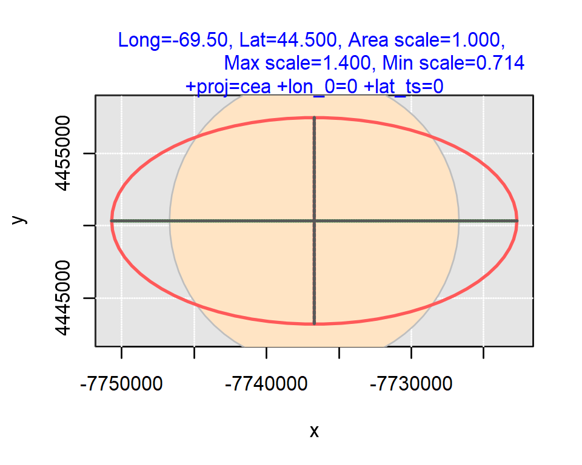
The area is indeed preserved, but this comes at a cost. The projection is not conformal except near the equator (this is where the projection makes contact with the earth’s spheroid). At 44.5°N the east-west scale is increased by 1.4 and the north-south scale is decreased by 0.7.
Earth-from-space planar projection
Let’s explore another family of projections: the orthographic projection.
lat <- seq(0, 60, by = 15L)
lon <- seq(-140, 0, by = 35L)
ti.out(proj.out = proj.ortho1, lat = lat, lon = lon)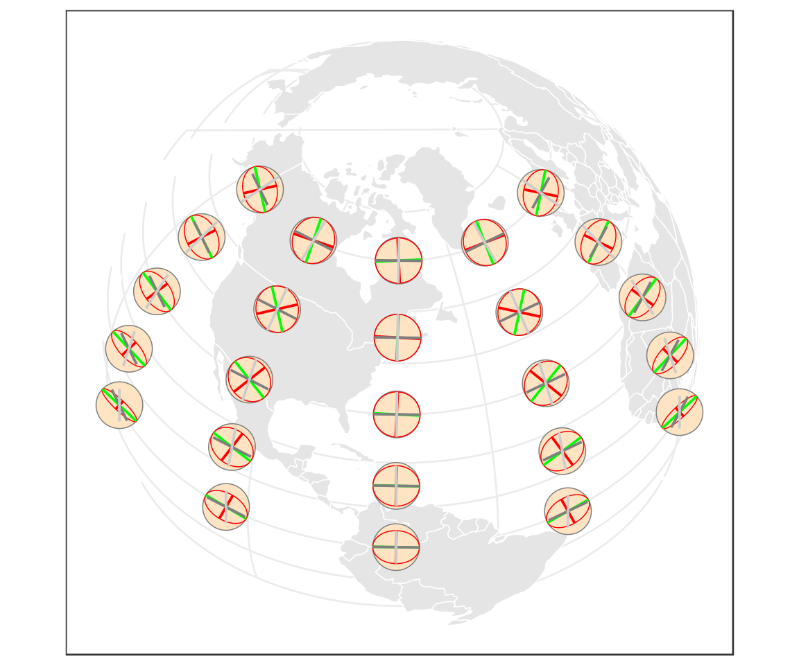
This particular coordinate system has the center of the projection touching the earth’s surface at -69°W and 45°N. As such, minimal distortion will occur at the center of this projection.
ti.maine <- local_TI(long = -69, lat = 45, proj.out = proj.ortho1)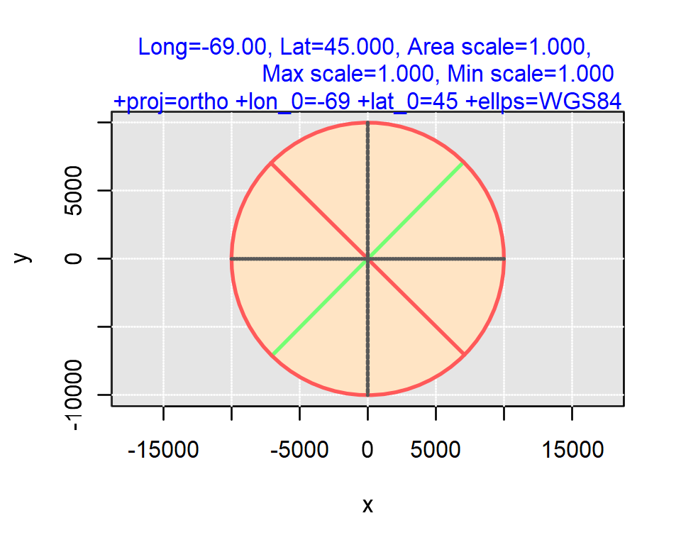
Distortion in area and length increases as one moves away from the projection’s center as shown in the next TI centered at 0° longitude and 80° latitude.
out <- local_TI(long = 0, lat = 80, proj.out = proj.ortho1)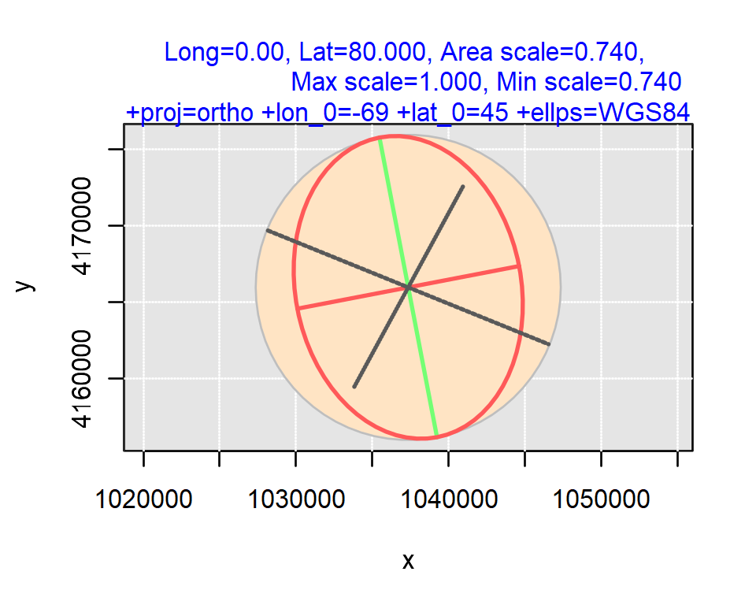
USA Contiguous Lambert Conformal Conic Projection
This next projection is designed to preserve shape within its extent.
lat <- seq(20, 60, by = 20L)
lon <- seq(-150, -50, by = 30L)
ti.out(proj.out = proj.lcc, lat = lat, lon = lon, bmap = us)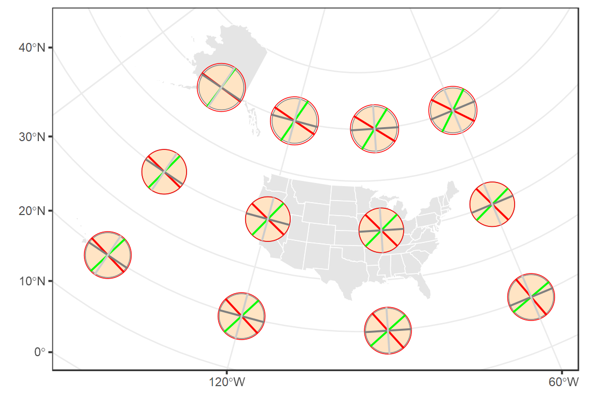
Let’s explore one of the TI polygons in greater detail. We’ll zoom in on (60°N, 130°W).
ti_lcc <- local_TI(long = -130, lat = 60, proj.out = proj.lcc)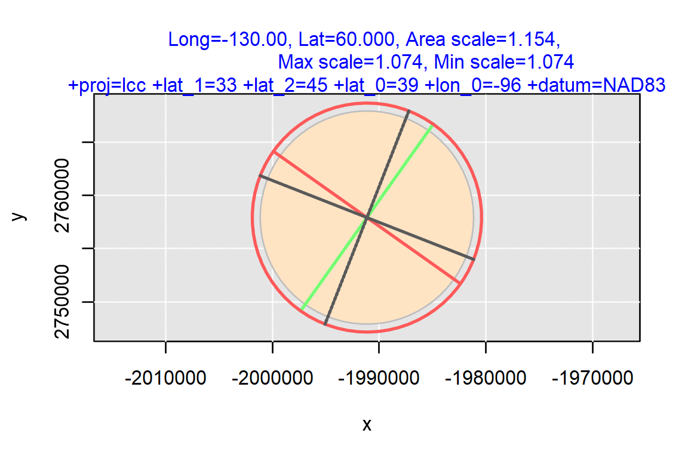
The principal directions (smallest and largest axes) are equal suggestion that shape is preserved. Another way we can quantify the distortion in shape is by extracting the angle between the parallel and meridian lines at the TI’s center from the ti_lcc object (these are shown as the two grey lines in the TI). A conformal projection is one that preserves angle, so we would expect a value of 90° between the two reference lines.
ti_lcc[[12]][3] # Extract the intersecting angleintersection_angle
89.99917 This is very close to 90°. But it comes at a cost: distortions in area and length scales.
ti_lcc$scale.area[1] 1.154365ti_lcc$max.scale[1] 1.074422ti_lcc$min.scale[1] 1.074405Generating areal scale factor rasters
We can generate a continuous (raster) surface of areal scale values. This can prove helpful in visualizing the distortion associated with the PCS across the whole map extent.
We’ll first create a custom function whereby areal scales less than one will be assigned a red hue, areal scales greater than one will be assigned a blueish hue, and scales close to one will be assigned a yellow hue.
library(raster)
sf_use_s2(FALSE) # Needed when cropping over large lon range
r.out <- function(ll, ur, proj.out, plot = TRUE, bgmap = world,
nrows = 14, ncols = 16) {
ll.prj <- prj2(ll, proj.out = proj.out)
ur.prj <- prj2(ur, proj.out = proj.out)
# Define raster extent in the native PCS (note that the choice of extent and
# grid size may generate instabilities in the projected values)
ext.prj <- extent(matrix(c(ll.prj[1], ll.prj[2], ur.prj[1], ur.prj[2]), nrow=2))
r <- raster(ext.prj, nrows=nrows, ncols=ncols, crs=proj.out, vals=NA)
# Extracts coordinate values in native PCS
coord.prj <- raster::coordinates(r)
# Now convert to lat/long values
# Note that we are reversing the transformation direction, we are going
# from projected to geographic.
coord.ll <- t(apply(coord.prj, 1,
FUN = function(x) prj2(x, proj.in = proj.out,
proj.out="+proj=longlat +datum=WGS84")))
# Compute Tissot area
i.lst <- apply(coord.ll, 1, function(x) ti_area(coord=x, proj.out = proj.out))
r[] <- round(i.lst,4)
# Re-project the world
bgmap.crp <- st_crop(bgmap, c(ll,ur) )
st_is_valid(bgmap.crp)
bgmap.prj <- st_transform(bgmap.crp, crs = st_crs(proj.out), partial = TRUE)
# Some polygons may need to be removed if invalid
valid <- st_is_valid(bgmap.prj)
bgmap.prj <- bgmap.prj[valid, ]
out <- ggplot()+
geom_raster(data = as.data.frame(r, xy = TRUE), interpolate = TRUE,
aes(x=x,y=y, fill = layer), alpha = 0.7) +
scale_fill_gradient2(low = "red", midpoint = 1, mid = "yellow", high = "blue")+
geom_sf(data = bgmap.prj, col = "black", fill = NA) +
coord_sf(xlim = extent(r)[1:2,], ylim = extent(r)[3:4,]) +
guides(fill = guide_colourbar(title = "Area scale"))
if (plot == TRUE){
out
}else{
return(r)
}
}Orthographic projection
We’ll extend our analysis of the orthographic projection from the last section.
ll <- c(xmin = -120, ymin = -20)
ur <- c(xmax = 40, ymax = 60)
r.out(ll, ur, proj.ortho1, plot = TRUE)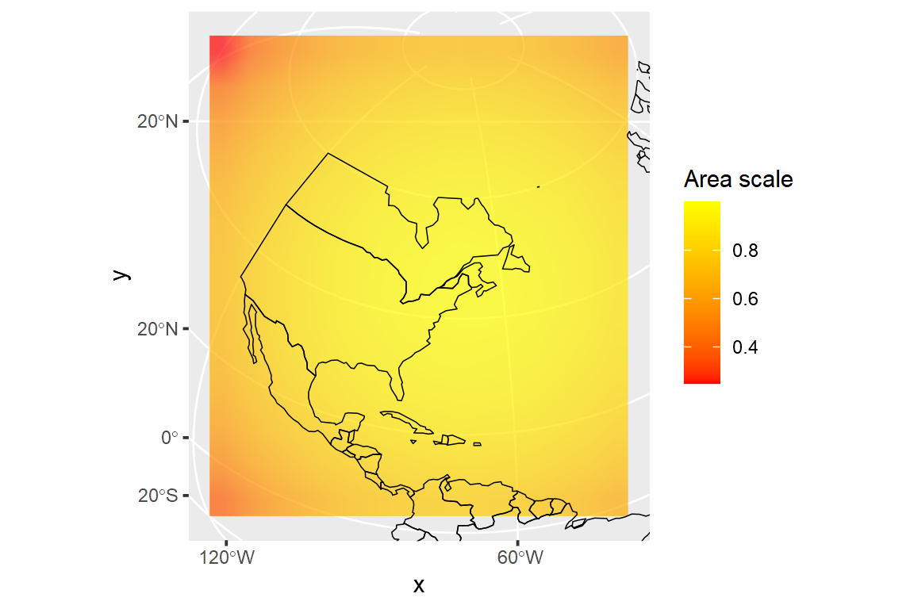
This orthographic projection has a true scale centered at 69° West and and 45° North (the coordinate system’s custom center). The areal scale fraction decreases as one moves away from the point. Yellow hue is assigned a scale of one (i.e. minimal areal distortion). Given its areal and conformal distortions, this projection is not particularly useful other than to portray the earth as viewed by an observer in space.
UTM projection
Next, we’ll explore a UTM coordinate system (Zone 19 North) and limit the extent to the State of Maine (USA). This will help us visualize the north-south strips of the projection where scale is close to 1 (this location coincides with UTM’s two standard lines).
ll <- c(xmin = -73, ymin = 43)
ur <- c(xmax = -65, ymax = 48)
r.out(ll, ur, proj.utm19N, bgmap = us) + # Map with US outline
geom_vline( xintercept = c(680000,320000), linetype = 2 ) # Add standard parallels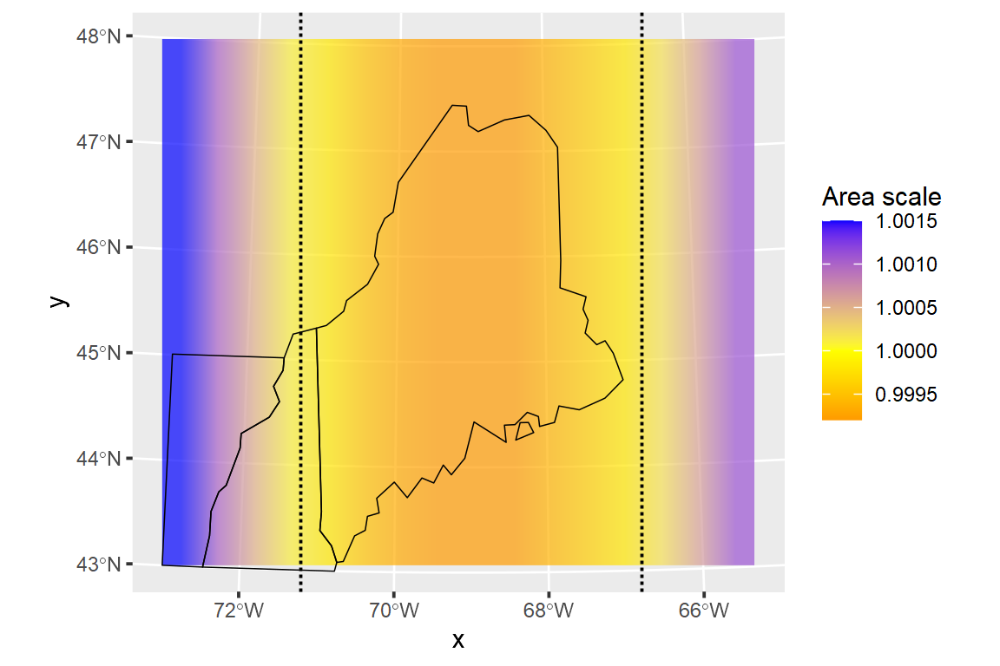
The UTM projection adopts a secant projection whereby the cylindrical projection contacts the earth at two standard lines (shown as dashed lines in the above figure). As such, the areal scale at the two standard lines is one whereas at the projection’s central meridian (69°W) scale decreases by a small amount (less than 2%). The standard lines are about 360 km from one another. Note that the standard parallels do not follow meridians.
Plate Carrée projection
A popular cylindrical coordinate system adopted as a standard projection for geographic data in GIS software like ArcMap and QGIS is the Plate Carrée projection (or a derivative thereof).
ll <- c(xmin = -170, ymin = -85)
ur <- c(xmax = 170, ymax = 80)
r.out(ll, ur, proj.carree) 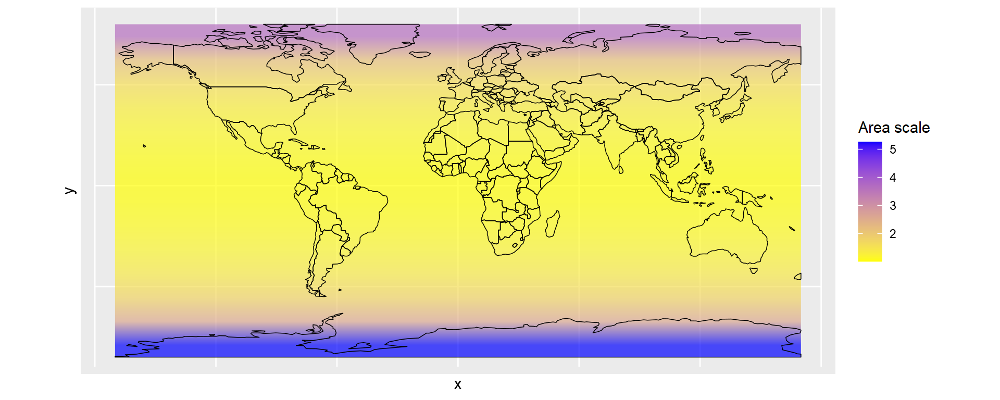
The scale is nearly unity at the equator and increases as one moves poleword.
Equal-area projection
Now let’s revisit the equal area projection. Let’s generate an areal distortion raster to explore the extent of equal area projection.
ll <- c(xmin = -170, ymin = -85)
ur <- c(xmax = 170, ymax = 85)
r.out(ll, ur, proj.cea)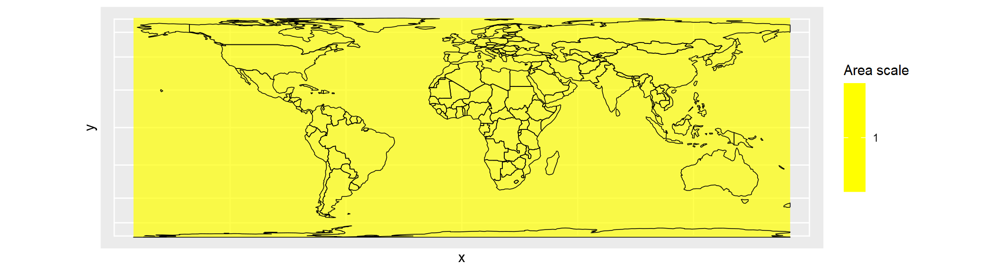
The map makes it clear that the areal scale remains true (to at least 3 decimal places) for much of the earth’s extent!
Combining indicatrix with areal scale factor raster
Next, we’ll overlap indicatrix ellipses with areal scale factor rasters. This will allow us to view distortions in shape and length at point locations as well as distortion in area across the entire extent.
Equal-area projection
We’ll continue with the last projection used (the equal area projection).
ll <- c(xmin = -170, ymin = -85)
ur <- c(xmax = 170, ymax = 85)
out.rast <- r.out(ll, ur, proj.cea)
# Generate Tissot indicatrix
lat <- seq(-80, 80, by = 20L)
lon <- seq(-150, 150, by = 35L)
tsf <- ti.out(proj.out = proj.cea, lat = lat, lon = lon, plot = FALSE)
# Add indicatrix to map
out.rast +
geom_sf(data = tsf$base, fill = NA, col = "grey50") +
geom_sf(data = tsf$ind, col="red", fill = NA) +
geom_sf(data = tsf$mina, col="red", fill = NA) +
geom_sf(data = tsf$maja, col="green", fill = NA) +
geom_sf(data = tsf$lam, col="grey50", fill = NA) +
geom_sf(data = tsf$phi, col="grey80", fill = NA)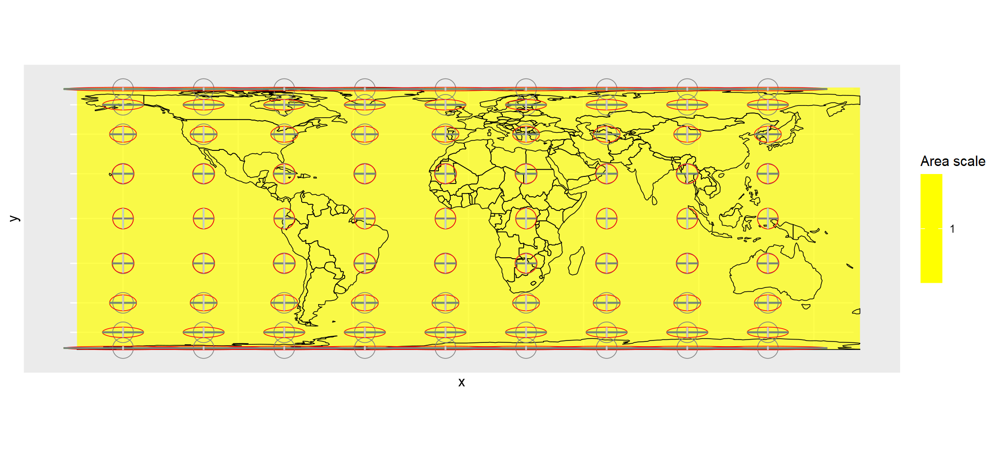
While the area scale remains true across the map’s extent, its shape clearly does not. Distortion of north-south and east-west scales is needed to ensure that the area is preserved near the poles.
Gnomonic projection
One interesting projection is the gnomonic projection. This projection is unique in that great circles (shortest distance on an ellipsoid) from the center of the projection map to a straight line. In other words, the shortest distance between to points on this projected map is the true great circle distance. The following map is that of a gnomonic projection centered at 30° North and 100° West.
ll <- c(xmin = -130, ymin = 0)
ur <- c(xmax = -45, ymax = 65)
# Generate raster output
out.rast <- r.out(ll, ur, proj.gnom)
# Generate Tissot indicatrix
lat <- seq(5, 65, by = 10L)
lon <- seq(-120, -70, by = 20L)
tsf <- ti.out(proj.out = proj.gnom, lat = lat, lon = lon, plot = FALSE)
# Add indicatrix to map
out.rast +
geom_sf(data = tsf$base, fill = NA, col = "grey50") +
geom_sf(data = tsf$ind, col="red", fill = NA) +
geom_sf(data = tsf$mina, col="red", fill = NA) +
geom_sf(data = tsf$maja, col="green", fill = NA) +
geom_sf(data = tsf$lam, col="grey50", fill = NA) +
geom_sf(data = tsf$phi, col="grey80", fill = NA) +
coord_sf(xlim = st_bbox(tsf$base)[c(1,3)],
ylim = st_bbox(tsf$base)[c(2,4)])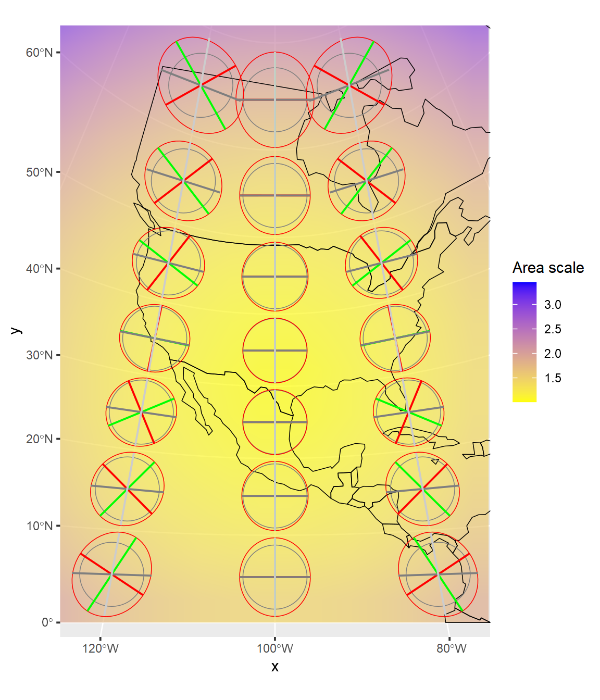
Equidistance conical projection
If distance is an important spatial property for your analysis, you can adopt an equidistant projection.
ll <- c(xmin = -130, ymin = 20)
ur <- c(xmax = -60, ymax = 60)
# Generate raster output
out.rast <- r.out(ll, ur, proj.eqdc)
# Generate Tissot indicatrix
lat <- seq(30, 50, by=10L)
lon <- seq(-120, -70, by=20L)
tsf <- ti.out(proj.out = proj.eqdc, lat = lat, lon = lon, plot = FALSE)
out.rast +
geom_sf(data = tsf$base, fill = NA, col = "grey50") +
geom_sf(data = tsf$ind, col="red", fill = NA) +
geom_sf(data = tsf$mina, col="red", fill = NA) +
geom_sf(data = tsf$maja, col="green", fill = NA) +
geom_sf(data = tsf$lam, col="grey50", fill = NA) +
geom_sf(data = tsf$phi, col="grey80", fill = NA) +
coord_sf(xlim = st_bbox(tsf$base)[c(1,3)],
ylim = st_bbox(tsf$base)[c(2,4)])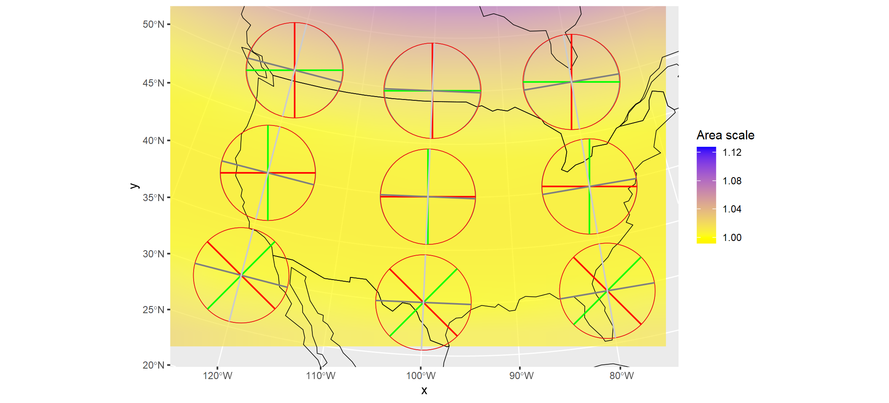
This projection adopts a secant case in that two standard parallels (30°N and 45°N) are used to define where the projection makes contact with the underlying spheroid. As such, minimum scale distortion will occur along these standards.
out <- local_TI(long = -69.5, lat = 30, proj.out = proj.eqdc)
out <- local_TI(long = -69.5, lat = 45, proj.out = proj.eqdc)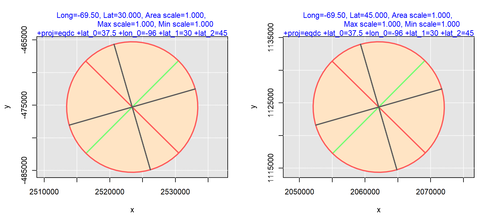
Distortion increases north or south of these parallels. For example:
out <- local_TI(long = -69.5, lat = 40, proj.out = proj.eqdc)
out <- local_TI(long = -69.5, lat = 50, proj.out = proj.eqdc)
Overall, this coordinate system does a decent job in limiting distance errors to 2% within the contiguous 48 states.
Code in this tutorial was created with the following external libraries
| GEOS | 3.9.3 |
| GDAL | 3.5.2 |
| proj.4 | 8.2.1 |
| GDAL_with_GEOS | true |
| USE_PROJ_H | true |
| PROJ | 8.2.1 |
 Manny Gimond, 2023
Manny Gimond, 2023